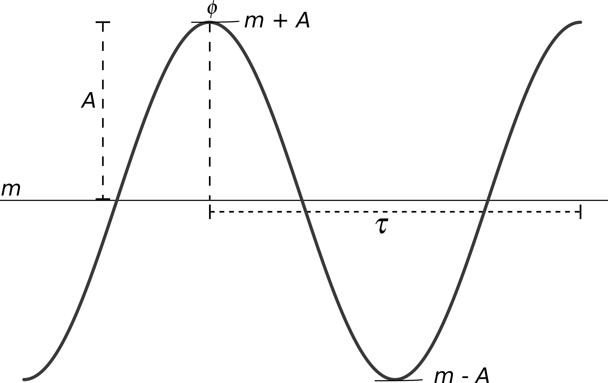
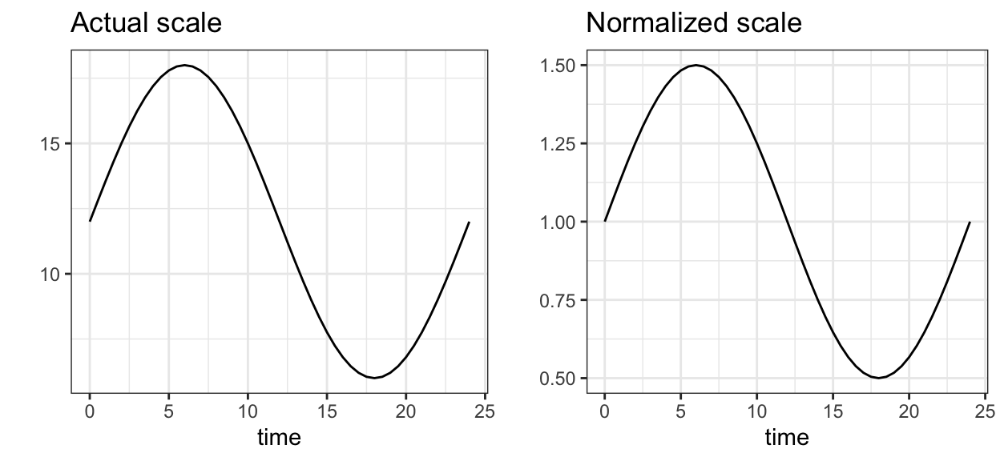
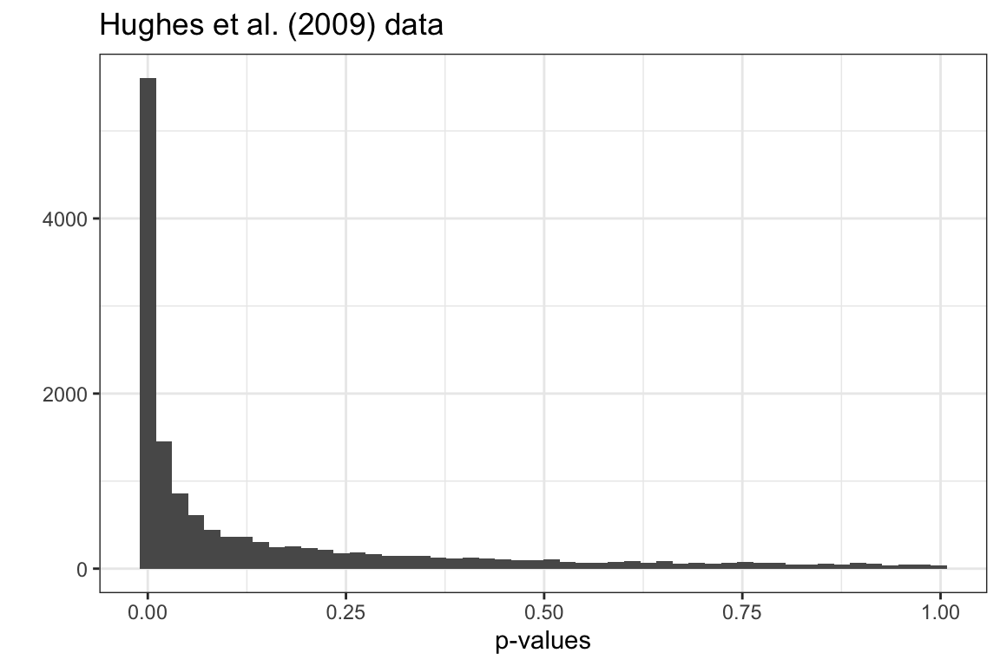

Circadian data
Circadian data is typically a series of observations in time (timeseries)

\(A\) = (absolute) amplitude
\(m\) = magnitude
\(\tau\) = intrinsic period
\(\phi\) = phase
\(a = \frac{A}{m}\) = relative amplitude: amplitude as a fraction of the magnitude
\(f = \frac{1 + a}{1-a} = \frac{m + A}{m - A}\) = fold-amplitude = ratio of peak to trough values
Ex. 1
Calculate relative amplitude and fold-amplitude and then do the same after changing \(m\) from 12 to 24
Check that you get the same values for from two ways of calculating \(f\)A <- 6
m <- 12a <- A/m
f <- (1+a)/(1-a)
a
fThe true scale (left) provides the absolute amplitude, while the normalized scale (right) provides the relative amplitude and fold-amplitude.

Waveforms
Rhythmicity only requires a repeating pattern approx. every 24h.
In reality, many shapes are possible
The sinusoidal shape is only for mathematical convenience.
Analysis goals
Why do we do want to perform this analysis?
decide if the timeseries is rhythmic or not
if rhythmic, compute the rhythm parameters (\(A, a, m, \tau\))
The ability to do this is greatly affected by the experimental design (more on this later)
Sampling scheme
Many common techniques, such as qPCR and western blots, can yield either type of data!
Genomic data
Let us begin with an example of preprocessed microarray data from the mouse liver (Hughes et al. (2009)). The data were collected in constant dark over 48h, one sample every hour. Mice were sacrified to obtain a sample – so we have an independent sampling scheme.
data("cycMouseLiverRNA", package = "MetaCycle")
hughes_data <- gather(cycMouseLiverRNA, time ,expr, -geneName)
hughes_data$time <- as.numeric(gsub("CT","",hughes_data$time))Ex. 2
The data is in adata.frame called cycMouseLiverRNA. View the dataset by typing the name of the dataset and “Run”
Ex. 3
To be able to plot usingggplot2 one needs the above data in a different ‘long’ format. The cycMouseLiverRNA in the long form is stored in hughes_data. Plot a few of your favorite clock genes from hughes_data(probe names are in the leftmost column of the data)
# View the data to find the columns containing the time and expression values.
hughes_data# Plot the timeseries using qplot from ggplot2. `filter` is used to select data for the desired gene.
qplot(time, expr,
data=filter(hughes_data, geneName == "Per2_1417602_at"),
xlab = "time (h)", ylab = "expression")Ex. 4
It is usual to plot gene expression data in the log2 scale.
Can you plot the same clock gene in the log2 scale?
# Use the `log2` function to transform the expression values.
qplot(time, log2(expr),
data=filter(hughes_data, geneName == "Per2_1417602_at"),
xlab = "time (h)", ylab = "log2 expression")Harmonic Regression
We are going to first discuss detection of rhythms only. Estimation of amplitude and phase will come later.
This is the simplest approach to rhythm analysis. A cosine curve is fit to the timeseries (\(y\))
\[ y(t) = m + A\cos\left(\frac{2\pi t}{\tau} - \phi\right)\]
Do you recognise the different parameters from earlier?
The above equation is exactly the same as this one:
\[ y(t) = m + c_1 \cos\left(\frac{2\pi t}{\tau}\right) + c_2 \sin\left(\frac{2\pi t}{\tau}\right)\]
If you can confidently fix \(\tau\), for e.g., \(\tau = 24\) for mice or \(\tau = 22.5\) for N. crassa, then this becomes a least-squares fitting exercise. You might be more familiar with this as linear regression or fitting a straight line through a cloud of points.
Since a model (the sine curve) is fit to the data is termed a parametric approach in statistics.
| Advantages | Disadvantages | |
|---|---|---|
| Regression is very very fast | Assumes rhythms of interest have sine waveform (recall this topic) | |
| Works for many different types of data (independent and longitudinal sampling) | The noise in your data must be Gaussian and independent between samples. Outliers really can mess things up. | |
| Unevenly-spaced or missing samples are not a problem | ||
| Amplitude and phase estimates are directly available | ||
Easily used within standard tools for differential gene expression analysis, such as limma/edgeR and DESeq2 |
||
| Very flexible. So other trends in data can be included |
Ex. 5
Let us look at the same liver dataset from before. Load the data in the workspace View the first few lines of the dataset usinghead command
# To see the list of datasets in this package
# data(package="learnRhythmanalysis")
# Load the dataset
data("hughes_2009_liver", package = "learnRhythmanalysis")
# View the first few rows of the dataset
head(hughes_2009_liver)Ex. 6
library(HarmonicRegression)
data("hughes_2009_liver", package = "learnRhythmanalysis")Use the harmonic.regression() function in the package HarmonicRegression for rhythm analysis. Run the analysis on the Hughes et al. (2009) data and store the results in the results variable
## Step 1. Load the data (already did in the previous first exercise)
## Step 2. Make the data into a matrix of numbers. Move gene names to rownames/columnnames as the case may be.
## Step 3. Transpose the data (genes in columns and times in rows) as `harmonic.regression` needs this format.
## Step 4. Create a vector of time points to match samples to times (this information is in the column names of the original data)
## Step 5. Run the analysis with the required parameters.
## Step 6. View the results## Step 1. Load the data (already did in the previous first exercise)
## Step 2. Make the data into a matrix of numbers. Move gene names to rownames/columnnames as the case may be.
hughes_data <- as.matrix(hughes_2009_liver[-1]) ## drop the gene symbols in the first column)
rownames(hughes_data) <- hughes_2009_liver$GeneName ## matrix in R can have rownames and columnnames## Step 3. Transpose the data (genes in columns and times in rows) as `harmonic.regression` needs this format.
hughes_data <- t(hughes_data) ## t() is a transpose operator
## Step 4. Create a vector of time points to match samples to times (this information is in the column names of the original data)
times <- seq(1,48) # create a vector of sample times## Step 5. Run the analysis with the required parameters.
results <- harmonic.regression(inputts = hughes_data,
inputtime = times,
Tau = 24,
normalize = TRUE)
## Step 6. View the results
ls.str(results) # the same information is available from the help for the function, i.e., type ?harmonic.regressionThe important information in this list are pars (contains amplitudes and phase), pvals (p-values) and qvals (q-values).
P-values & Q-values
We need to correct for multiple-testing.
Multiple testing drives the number of false positives up and must be controlled.
The multiple tests are the large number of transcripts we are testing the genome-wide dataset.
Normally, we correct the p-values for multiple testing to obtain q-values or adjusted p-values (there are some statistical differences between the two but for your purposes they are the same.)
Ex. 7
I have generated a matrix of random (normally distributed) values, i.e., there are no rhythms in this data.
First, perform harmonic regression
Then, find the number of timeseries with p-value < 0.05
Finally, find the number of timeseries with adjusted p-value/q-value < 0.05. What do you see?
library(HarmonicRegression)
data <- matrix(rnorm(48*1000), ncol=48)## View the random data if you like
# head(data)
## Show the dimension of the data (rows columns)
sprintf("The size of the dataset: %d", dim(data))
## Run harmonic regression on the dataset
results <- harmonic.regression(t(data),
inputtime = seq(1,48),
Tau = 24,
normalize = TRUE)## The number of "genes" with p-values less than 0.05
sum(results$pvals < 0.05)## Correct for multiple-testing using Benjamini-Hochberg using `p.adjust`
## but harmonic regression already does this for you
sum(results$qvals < 0.05)Note The fraction of “rhythmic” timeseries found by the analysis is approximately 1000 * 0.05

On the other hand the p-value distribution on the real data we analyzed earlier, looks like 
To learn about interpreting p-value distributions read this post. Note these insights are only for the p-value distribution not for the q-values.
In summary, if you do not see a p-value distribution that is flat except for a peak at the left end (near zero), then something is not okay with your parametric method.
Non-parametric approaches
Two popular (and similar) approaches in this category are JTKcycle (Hughes et al. (2010)) and rain (Thaben and Westermark (2014)).
Both these methods relax the assumption about the strictly sinusoidal shape of the rhythms. More importantly, they only look for patterns of alternating increasing and decreasing values. So scale of the data (normal or log scale) does not matter.
JTKcycle
| Advantages | Disadvantages | |
|---|---|---|
| Robust to outliers | Requires integer-intervals and even spacing between samples | |
| High computational efficiency | Dispersed output parameters (P-value, period and phase) for low resolution data | |
| Improved power in analyzing data with duplicate samples | Cosine curve bias | |
| Works with missing data and replicates | False negative rate issue for low resolution timeseries | |
| Does not assume specific noise distribution | Less accurate phase for low resolution timeseries | |
| Can test for a range of periods (\(\tau\)) |
Ex. 8
Apply JTKcycle on the Hughes et al. (2009) dataset (Note: this is going to be slow, so be patient.)
View the results and the top 10 rhythmic geneslibrary(MetaCycle)
data("hughes_2009_liver", package = "learnRhythmanalysis")## Step 1. Load the data (already done).
## Step 2: Vector of sample times
times <- seq(1,48)
## Step 3: Run meta2d (that has three methods JTKcycle, Lomb-Scargle and ARSER).
## Here we will use only JTKcycle.
## The call is complex as it was originally only designed to work with files.
results <- meta2d(inDF = hughes_2009_liver,
timepoints = times,
minper = 24,
maxper= 24,
cycMethod = "JTK",
outputFile = FALSE,
infile = "csv",
outdir ="csv",
filestyle = "csv",
releaseNote = FALSE)## Step 4: View results -- the data is a list for each method chosen in the meta2d call. Here we are only looking at the JTK results
head(results$JTK)## Step 5: View the top 10 hits
head(results$JTK[order(results$JTK$ADJ.P),], n = 10)RAIN
| Advantages | Disadvantages | |
|---|---|---|
| Unequal length of increasing and decreasing portions of the curve (removes any cosine curve bias) | Can be slow for long timeseries | |
| All advantages of JTKcycle | Underpowered for short timeseries as bootstrapping provides clustered p-values | |
| P-values are estimated using bootstrapping | Clustered distribution of p-values can affect multiple-testing correction method | |
| Does not require integer-intervals between samples |
Ex. 9
Now, we will testrain on RNA-seq data of the mouse liver. This dataset comes with rain package. It has six timepoints over 24h with two replicates at each timepoint. As always load the data and view it Run the RAIN analysis Remember to correct for multiple testing as RAIN does not do this for you
library(rain)
data(menetRNASeqMouseLiver, package="rain")## Step 1: Load the data
data(menetRNASeqMouseLiver, package="rain")
head(menetRNASeqMouseLiver)## Step 2 & 3: Transpose the data and run `rain` on the data
menet.ossc <- rain(t( menetRNASeqMouseLiver ),
deltat = 4,
period = 24,
nr.series = 2,
peak.border = c(0.3, 0.7))## Step 4: View the results
head(menet.ossc)## Step 5: Correct p-values for multiple testing using Benjamini-Hochberg and view the top genes
# the `transform` function lets you add new columns to the data.frame from the already present columns.
menet.ossc <- transform(menet.ossc,
adjusted.pVal = p.adjust(pVal, method = "BH"))
head(menet.ossc[order(menet.ossc$adjusted.pVal),], n=10)Note: The identical p-values and adjusted p-values for many genes. This common in non-parametric tests – it will become less obvious with more data per timeseries.
Please do not use phase or period estimates from
rainorJTKcycle. We will come to parameter estimation next.
Both methods can only be applied on longitudinal timeseries from a single biological unit timeseries.
Parameter estimation
The three tests discussed are used to detect rhythms (recall slide). The standard approach is to follow rhythm detection by harmonic regression on the timeseries to obtain amplitudes and phases (parameter estimation).
Both detection and estimation are done together in the parametric harmonic regression. But the non-parametric methods are performed in two steps.
The MetaCycle package that contains the JTKcycle method performs these two steps and provides amplitude and phase estimates in the results. On the other hand, rain must be followed by harmonic.regression to get the amplitudes and phases.
Note: harmonic.regression gives the relative and not the absolute amplitudes.
It is common to follow a q-value-based selection of rhythmic timeseries by a relative amplitude-based filtering.
The thinking behind this is as follows. The p-value provides a statistical measure of rhythmicity of a timeseries. It is not uncommon at all to find timeseries that have a very small amplitudes yet have very significant rhythms.
Such timeseries are statistically but not biologically significant. Therefore, we filter the rhythmic timeseries by ensuring that the relative-amplitude is greater than threshold (10%-15%).
So statistics are important. But don’t get obsessed by the p-values/q-values. Biological relevance is equally important.
Experimental design
As mentioned earlier, the ability to detect rhythms is extremely sensitive to the sampling of the timeseries.
For very good rhythm detection, the current consensus is sampling every 2h over two circadian cycles (without replicates per sample). Having biological replicates at each timepoint would allow one to relax both of these requirements.
For estimating phases and amplitudes, higher sampling is preferred. Accuracy of phase is about half the sampling interval.
For more information on this I refer you to the series of papers on this topic from the Hogenesch group (Wu et al. (2014), Li et al. (2015), Hughes et al. (2017))
Workflow
Step 1. Organize your data in your computer or get public datasets from repositories (such as GEO using GEOquery package).
Step 2. Preprocess the data to a matrix of values. E.g., using oligo or affy packages for microsarray and alignment and counting using Rsubread.
Step 3. Normalize the data according to the technology for inter-sample variation
Step 4. Exploratory analysis (PCA, MDS plots) to check for batch effects, bad samples etc.
Step 5. Filtering out lowly-expressed genes based on mean/median expression.
Step 6. Rhythm analysis for detecting rhythms and estimating parameters.
Step 7. Select rhythmic genes according q-value and optionally the relative amplitude.
Step 8. Plot the results, perform GO analysis, ….
Smaller datasets
Often experiments in the lab produce smaller numbers of timeseries. All the discussed methods can also be used on such data.
However, one must bear in mind the disadvantages of the the particular method when you have few time samples/replicates. Also, since one performs fewer tests, one can opt for more conservative multiple-correction procedures, such as Boneferroni.
With very coarsely sampled data, the non-parametric methods are better as they make fewer assumptions.
The most statistically powerful method (when all else fails/one should start with this) is one-way ANOVA with time as the factor. If this is significant we known that measured quantity is time-dependent not that is rhythmic.
Golden Rules
1. Always look at the data. Seeing is believing. If you cannot see the rhythms it is probably not there.
2. Include all effects in your analysis, e.g., different batches, different cultures. Check if they matter before ignoring them.
3. Think about the analysis before you run experiments. If needed, get in touch with biostatistician/bioinformatician.
4. P-value/Q-value > threshold does not mean the timeseries is not rhythmic, only that the evidence is inconclusive. Absence of evidence is not evidence of absence.
5. Never duplicate and concatenate data before running statistics (Hughes et al. (2017))
6. Control for multiple testing (Hughes et al. (2017))
7. Deposit your raw data into public repositories (Hughes et al. (2017))
8. Never directly alter the raw data. Always save any processed data separately.
9. Never do two tests when you can get away with one – do differential rhythmicity analysis when you compare two rhythms (Thaben and Westermark (2016))
References and Resources
Learn programming in R with free book | 
MetaCycle package for running three different rhythm analysis tools
Well-managed repositories for biological data analysis Bioconductor. They also have many workflows and tools to make your life easier.
Exploratory analysis and pre-processing (before rhythm analysis) workflows for microarrays (on bioconductor) and RNA-seq (Love et al. (2015))
Designing and conducting circadian RNA-seq study (Li et al. (2015))
BioDare – Fast period analysis, timeseries processing and aesthetic visualizations
References
Hughes, M.E., DiTacchio, L., Hayes, K.R., Vollmers, C., Pulivarthy, S., Baggs, J.E., Panda, S., and Hogenesch, J.B. (2009). Harmonics of Circadian Gene Transcription in Mammals. PLoS Genet 5, e1000442.
Hughes, M.E., Hogenesch, J.B., and Kornacker, K. (2010). JTK_CYCLE: An Efficient Nonparametric Algorithm for Detecting Rhythmic Components in Genome-Scale Data Sets. Journal of Biological Rhythms 25, 372–380.
Hughes, M.E., Abruzzi, K.C., Allada, R., Anafi, R., Arpat, A.B., Asher, G., Baldi, P., Bekker, C. de, Bell-Pedersen, D., Blau, J., et al. (2017). Guidelines for Genome-Scale Analysis of Biological Rhythms. Journal of Biological Rhythms 32, 380–393.
Li, J., Grant, G.R., Hogenesch, J.B., and Hughes, M.E. (2015). Considerations for RNA-seq Analysis of Circadian Rhythms. In Methods in Enzymology, (Elsevier), pp. 349–367.
Love, M.I., Anders, S., Kim, V., and Huber, W. (2015). RNA-Seq workflow: Gene-level exploratory analysis and differential expression. F1000Research 4, 1070.
Thaben, P.F., and Westermark, P.O. (2014). Detecting Rhythms in Time Series with RAIN. Journal of Biological Rhythms 0748730414553029.
Thaben, P.F., and Westermark, P.O. (2016). Differential rhythmicity: Detecting altered rhythmicity in biological data. Bioinformatics 32, 2800–2808.
Wu, G., Zhu, J., Yu, J., Zhou, L., Huang, J.Z., and Zhang, Z. (2014). Evaluation of five methods for genome-wide circadian gene identification. Journal of Biological Rhythms 29, 231–242.
Analysis of Rhythms
Dr. Bharath Ananthasubramaniam | I’m on Twitter
Institute for Theoretical Biology, Charite Universitaetsmedizin, Berlinbharath.ananth@charite.de